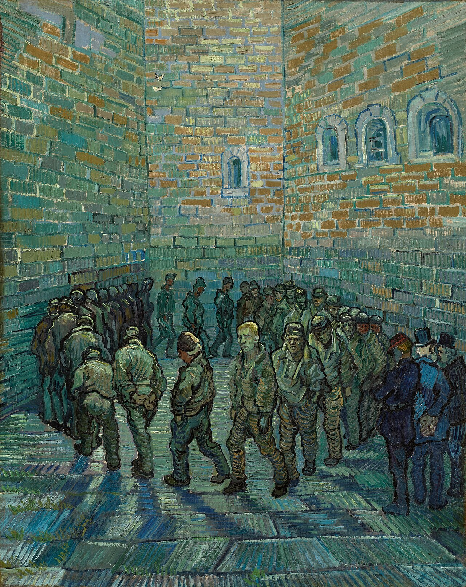

Bac technologique · Première et Terminale · Français · Lycée général et technologique
Victor Hugo et la justice
Le Dernier Jour d'un condamné (1829), Claude Gueux (1834). Fiche de présentation de la séquence.
- Bac technologique
- Première et Terminale
- Français
- 10 séances
- 3 évaluations

Problématique. Comment la littérature transforme-t-elle notre manière de juger, sans supprimer la difficulté de juger ?
Le cadre
| Rubrique | Contenu |
|---|---|
| Niveau | Bac technologique, Première et Terminale, français, lycée général et technologique. La séquence est aussi utilisable en voie générale. |
| Œuvres | Victor Hugo, Le Dernier Jour d'un condamné (1829) et Claude Gueux (1834). Lecture intégrale accompagnée, extraits substantiels en classe. Domaine public. |
| Objet d'étude | Le roman et le récit du Moyen Âge au XXIe siècle (BO spécial n° 1 du 22 janvier 2019, dans sa version modifiée). Ces œuvres de 1829 et 1834 ne sont pas les œuvres intégrales de « La littérature d'idées du XVIe siècle au XVIIIe siècle ». |
| Durée | Dix séances de 55 minutes, conduites sur 52, avec un point d'arrêt et une sortie de secours de huit minutes, puis un dispositif d'oraux blancs. |
| Méthode | Spirale de Gorse, conçue par Madame Carole Paoli Pompougnac : Je remarque, Je repère, Je comprends, J'anticipe, Je trouve le sens. |
Cinq objectifs
- Compréhension de l'écrit. Lire précisément deux récits du XIXe siècle : narrateur, rythme de la phrase, images, silences. Relier un choix d'écriture à une pensée sur le jugement.
- Compréhension de l'oral. Écouter un extrait court (2 à 8 min) avec une tâche précise, lorsqu'une lecture ou un document d'archives fiable est disponible. On ne projette jamais un film entier en classe. Aucun lien n'est inventé.
- Expression écrite. Tenir une trace à chaque séance. S'entraîner au commentaire, à la reformulation et, en voie technologique, à l'essai. Réviser une production à partir de critères.
- Expression orale en continu. Prendre la parole à chaque séance. Présenter une œuvre (épreuve anticipée de français) ou, en Terminale, une question de Grand Oral réellement adossée à une spécialité.
- Interaction orale. Tenir l'entretien : écouter une objection, reformuler, préciser, sans abandonner aussitôt son raisonnement.
Les épreuves préparées
| Épreuve | Ce que la séquence prépare |
|---|---|
| Écrit de l'épreuve anticipée, voie technologique (4 h, coefficient 5) | Commentaire, ou contraction de texte suivie d'un essai. Entraînement en séance 8, clairement distingué d'un sujet national complet. |
| Oral de l'épreuve anticipée (30 min de préparation, 20 min, coefficient 5) | Seconde partie : présentation de l'œuvre choisie et entretien, 8 minutes, 8 points (séance 9). Ce n'est pas un exposé de dix minutes. |
| Grand Oral, Terminale | Présentation de 10 minutes et échange de 10 minutes, après 20 minutes de préparation (séance 10). Coefficient 14 en voie technologique pour la session 2026, 12 à compter de 2027. Uniquement si l'adossement à la spécialité est réel. |
Les formats sont ceux des textes officiels cités dans la fiche professeur (programme de 2019, document d'accompagnement de l'épreuve anticipée, notes de service du 10 septembre 2026 pour la session 2027). On ne transfère pas le plan du Grand Oral à l'oral de français.
Déroulé, séance par séance
| Séance | Titre | Travail |
|---|---|---|
| 1 | Une histoire suffit-elle à nous faire juger autrement ? | Les deux ouvertures. Diagnostic. Phrase verbale et non verbale. |
| 2 | Comment une pensée devient-elle une prison ? | Le Dernier Jour d'un condamné, chapitre I. Spirale de Gorse. Négation et restriction. |
| 3 | Qui regarde qui dans une scène de punition ? | Le Dernier Jour d'un condamné, chapitre XIII. Opposition et concession. |
| 4 | Comment raconter ce qui semble impossible à supporter ? | Le Dernier Jour d'un condamné, chapitre XLVIII. Pronoms et voix. |
| 5 | Un récit de faits peut-il être une accusation ? | Claude Gueux, incipit. Cause et conséquence. Évaluation de mi-parcours. |
| 6 | Expliquer la violence revient-il à la justifier ? | Claude Gueux, l'échange avec le directeur, puis le crime. Discours rapportés. Débat. |
| 7 | À qui le narrateur demande-t-il finalement des comptes ? | Claude Gueux, le réquisitoire final. Impératif et images. |
| 8 | Comment transformer une lecture en argument ? | Confrontation des deux œuvres. Concession et modalisation. Commentaire ou essai. |
| 9 | Comment parler d'une œuvre sans réciter une fiche ? | Présentation d'œuvre et entretien, épreuve anticipée de français. |
| 10 | Comment construire une réponse de dix minutes ? | Grand Oral : exposé préparé, support réduit, objections, autocorrection. |
Chaque séance comporte un travail de langue, des flashcards, une prise de parole, une trace écrite, un devoir et une sortie de secours.
Trois évaluations
| Évaluation | Quand | Forme |
|---|---|---|
| Diagnostique | Séance 1 | Première lecture comparée des deux ouvertures, à l'écrit puis à l'oral. Point de départ, sans note lourde. |
| Mi-parcours | Séance 5 | Écrit sur l'incipit de Claude Gueux. Observation, référence, analyse, interprétation. La langue est notée. |
| Sommative | Séances 9 et 10 | Présentation d'œuvre et entretien (épreuve anticipée). Grand Oral, si la question est adossée à une spécialité. Puis une version écrite améliorée. |
Chaque évaluation a une grille professeur et une grille d'autocorrection, dans le livret, avec un critère de langue.
Téléchargements
Cinq documents, chacun en PDF, Word et LibreOffice. Licence CC BY-NC-SA 4.0 : vous pouvez utiliser et adapter ces documents en citant leur autrice, sans usage commercial, et en partageant vos versions dans les mêmes conditions.
-
Fiche de présentation (la page, à imprimer)
PDF Word (.docx) LibreOffice (.odt) -
Séquence élève
PDF Word (.docx) LibreOffice (.odt) -
Fiche professeur
PDF Word (.docx) LibreOffice (.odt) -
Fiche de correction
PDF Word (.docx) LibreOffice (.odt) -
Version accessible : fiches autonomes
PDF Word (.docx) LibreOffice (.odt)
Une version de cette séquence, adaptée au baccalauréat professionnel, est également disponible.
Madame Carole Paoli Pompougnac
conçu par Madame Carole Paoli Pompougnac, mis en page par Grok. Couverture : Vincent van Gogh, La Ronde des prisonniers (Prisoners Exercising, The Prison Courtyard), d'après Gustave Doré, février 1890, huile sur toile, 80 x 64 cm, musée Pouchkine, Moscou. Domaine public, via Wikimedia Commons. Spirale de Gorse : illustration originale, dans la séquence. Méthode de la spirale de Gorse conçue par Madame Carole Paoli Pompougnac.
Retour à la séquence · Lettres, lycée général et technologique